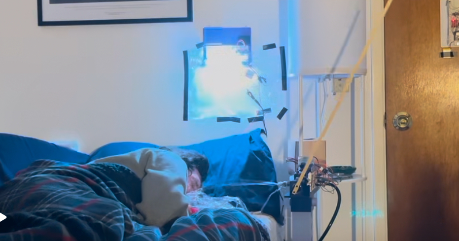
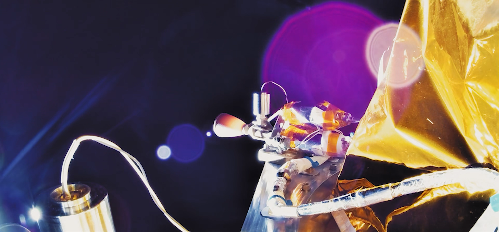
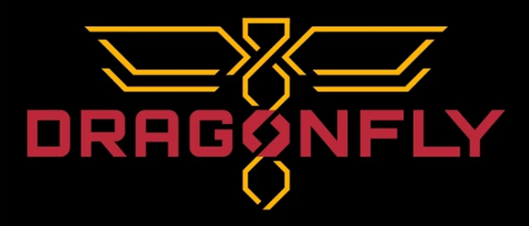

Engineering Portfolio
A collection of some engineering projects I have worked or am currently working on. These projects span work from internships, student teams, class projects, and personal projects. Click on a tile to learn more about that project!
Featured Projects

BEAR: Berkeley Emergency Aerial Response
My UC Berkeley aerospace engineering design capstone. An autonomous tilt-rotor VTOL drone designed to locate a lost hiker, drop and aid packagem, and report that location back to serach and rescue teams. For this projeft I specifically conducted aerodynamic analysis, wing design, manufacturing, and tilt rotor testing.

Liquid Rocket Test Stand Main Valves
The main valves for the vertical test stand of the proplsion system for my undergraduate rocketry team's Eureka 3 rocket. This test stand was build as a test bed for custom proulsion hardware as such the main valves neede to be simple and robust to eliminate valve failures as confounding factors. As such I designed and built these valves using largely off the shelf hardware resulting in a set of robust and reliable valves.
Projects
Flying Wing Simulation and Control
A combination of the work I did for my ME103 and E178 class pojects during senior year of my undergraduate degree. The ME103 portion of this project consisted of conducting simulation of a flying wing aircraft design in both Ansys Fluent and OpenVSP comparing these simulations to wind tunnel tests. This was done with the goal of determining how design factors effect trim conditions and how well these effects are captured by simulation. The E178 component expaned on this by rreated a surrrogate model fo the design using OpenVSP data, using that model to create a simple MPC controller capable of controlling the aircraft's trajectory in 3D space.

The Devious Alarm
The final project for my undergraduate ME100 electronics course where I built an alarm clock that progressively annoysi the user untill they get our of bed. This alarm clock utilized a set of ESP32 micro controllers, sensors, and actuators to create an a larm that is impossible to ignore and only shust off when the ser is truly out of bed.

Vast Space: Saiph Thruster Testing
Worked as a propulsion test intern at Vast Space supporting testing of Impulse Space's Saiph thruster. In this role I served as the test director'operator across 24+ successful hot-fires and 9+ successful campaigns overseeing operations, managing the flow of test data, and interfacing with REs. This work resulted in the completion of the flight rational for the HAven Demo spacecraft and mission which successfully launched in November 2025 and completed its mission and de-orbited in February of 2026.

Custom Poppet Valve
A custom poppet value I desiged to be used as the nitrous main valve for my undergraduate student rocketry team's Eureka 3 rocket. This valve consisted of entirely custom hardware with the valve being sealed by a pressurized pilot volume and PTFE insert, with the valve being opned by venting this pilot volume. This valve has since not yet been launched or hotfired but has acheived successful operation during multiple cold flow tests.

NASA: Dragonfly Rotor Blade Optimization
A summary of the research I conducted during my summer internship at NASA Ames Research center in the Advanced Supercomuting Divsion at the end of sophmore year of my undergraduate degree. During this reserach I was responsable for developing an optimization infsatructure for the rotor blade design of the Dragonfly UAV being sent to Titan. To do so I combined high and low fidelity 2D and 3D computational methods to optimize Dragonfly's indiviudal airfoils and over 3D blade geometry, resulting in the creation of increased efficency blade geometries.